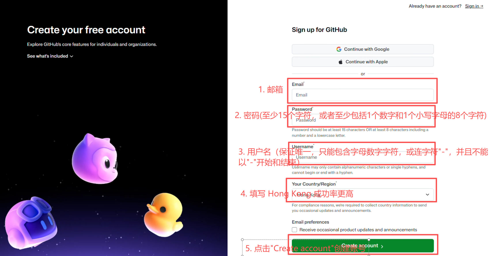

注册 GitHub 账号
-
首先进入 GitHub 官网的注册页面。
Sign up是注册，Sign in是登录；如果已经有账号，直接登录即可，不要重复注册。 -
填写自己常用且能正常收信的邮箱（比如 QQ、163、Gmail 等）、密码和用户名。密码不要与其他网站重复，也不要发给他人；提交后按邮件提示完成验证。
-
注册完成后先确认能够正常登录，再在个人设置中检查邮箱是否已验证。之后 Fork 仓库、提交修改和接收通知都会使用这个账号。

异常情况
-
点击“Create account”后需要进行验证，以确认当前操作由真人完成
解决：按页面提示完成图片或声音验证，等待页面给出结果后再继续，不要在验证尚未完成时反复刷新。
-
如果出现“Unable to verify your captcha response...”问题
解决：先检查网络是否稳定，关闭会拦截验证页面的扩展，再重新打开注册页。仍然失败时，可以间隔一段时间后重试；更换邮箱或设备应放在最后，并确保新邮箱确实能收信。
-
如果注册邮件没有收到
解决：先查看垃圾邮件、广告邮件和邮箱过滤规则，确认填写的地址没有拼写错误，再从 GitHub 页面重新发送验证邮件。不要把邮件中的验证链接或验证码发到公开 Issue、群聊或评论区。
-
如果上述方法仍不能解决
解决：记录页面显示的完整错误、发生时间和使用的浏览器，再到 GitHub Support 查询。也可以在注册页面选择
Continue with Google，但请先确认自己能够正常使用该 Google 账号；第三方账号的安全设置仍由账号本人负责。